Guía de estudio – Recertificación Sedigas Premium (destreza visual)
8 de noviembre de 2026
Cómo es el examen Premium
Son 20 casos de destreza visual y se aprueba con 16. Puedes fallar como máximo 4. Cada acierto vale 1 punto; un fallo o una pregunta en blanco valen 0. No detectar el defecto cuenta como respuesta incorrecta, así que nunca dejes una en blanco.
| Bloque | Qué trata | Casos en Premium | Casos en Premium Plus |
|---|---|---|---|
| PAD-1 | Pruebas previas y puesta en servicio (altas) | 6 | 5 |
| PAD-2 | Inspección periódica (IP) | 6 | 5 |
| OD | Operaciones domiciliarias (TOD) | 3 | 3 |
| AU-IR | Urgencias en instalaciones receptoras (TAU) | 5 | 4 |
| AU-Redes | Urgencias en redes | — | 3 |
| Total / aprobado | 20 / 16 | 20 / 16 |
En cada caso hay que dar tres cosas: el veredicto (correcto / incorrecto, o sin defecto / anomalía secundaria / anomalía principal), una explicación de una línea y, en OD y AU, la actuación en la vivienda. Cualquier respuesta equivalente a la oficial cuenta como buena, así que escribe corto y concreto: el defecto y la cota que falla.
La regla de oro: mira primero qué aviso es
La misma instalación puede ser correcta o incorrecta según el tipo de aviso. Esta es la trampa que más se repite en los exámenes: antes de mirar el dibujo, lee qué aviso o qué inspección es.
| Tipo de aviso | Qué evalúas | Qué NO evalúas | Actuación típica |
|---|---|---|---|
| PAD-1 · Alta / puesta en servicio | Todo con la normativa completa (UNE 60670): cotas, ventilaciones, volúmenes, SPC | — | Correcto / incorrecto + qué cota falla |
| PAD-2 · Inspección periódica (IP) | Anomalías de la lista de IP y si son secundarias o principales | Cosas que solo se exigen en altas (p. ej. salida de aparato tipo C en galería: en IP no se valora; lo delataría el CO ambiente) | Sin defecto / anomalía secundaria / anomalía principal |
| OD · Cambio de contador | Solo la operación | Distancias y altura del contador | Cambiar contador, prueba de estanqueidad y dar gas |
| OD · Reapertura sin certificado | Estanqueidad | Distancias (p. ej. entre salidas de calderas) | Prueba de estanqueidad y dar gas |
| OD · Reapertura con certificado | Que cumpla la UNE 60670 | — | Si falla algo grave (caldera tipo B sin salida de humos): precintar el aparato o la instalación |
| AU-IR · Falta de presión | Solo lo que causa el aviso | Falta de ventilación (no se considera defecto en estos avisos) | Comprobaciones, prueba de estanqueidad y dar gas |
| AU-IR · Sin gas | Peligros graves a la vista | — | Aparato tipo B sin salida de humos: incorrecta, se precinta la caldera |
Como norma práctica: en una alta (PAD-1) se mira todo, en una IP (PAD-2) se clasifica la gravedad, y en OD o en urgencias se atiende al aviso y solo se para ante un peligro claro.
Novedades que cambian respuestas (UNE 60670:2023 y esquemas 2022)
Comparado con los ejemplos de examen, las especificaciones de octubre de 2025 y el documento de cambios de septiembre de 2025 cambian estas cosas. Ante la duda, manda lo nuevo.
| Tema | Antes (ejemplos de examen) | Ahora |
|---|---|---|
| Falta de deflector | No era defecto si el aparato estaba en zona exterior | Anomalía principal (IPa-5) siempre, esté donde esté |
| Altura del totalizador | Se daba 2,00 m para todo | 1,70 m en vivienda o exterior; 2,00 m en centralizaciones; hasta 2,40 m en módulos prefabricados con escalera |
| Contador junto a cocina | 40 cm sin pantalla | Se mide en proyección horizontal desde el extremo de la cocina; el mueble que contiene el contador cuenta como pantalla |
| Contador en baño o dormitorio | Prohibido siempre | Se permite en espacios diáfanos de más de 75 m³ |
| Local con contador interior | — | Ventilación permanente de 5 cm² |
| Toma de muestras | Se podía practicar | Aparatos de hasta 70 kW deben tenerla; sin toma accesible sin desmontar la carcasa = AS-4 |
| Puesta en marcha de aparatos | — | Nunca con CO ambiente de 15 ppm o más, ni con CO corregido de 500 ppm o más |
| Armario de regulación o centralización sin puerta | «Estado de conservación» | Defecto propio: CS-8 «puerta o cerradura incorrecta» |
| Contadores sin identificar en centralización | — | Nuevo defecto CS-10 |
| Llave de aparato no bloqueable | — | Defecto si no está cerrada, precintada y taponada (IPa-8) |
| Rejillas de ventilación | — | Deben ser fijas (las de lamas móviles no valen) |
| Cocina tipo A en loft | — | Permitida si tiene detección de llama, ≤ 12 kW y más de 80 m³ |
| Chimenea colectiva | — | Prohibido mezclar aparatos de condensación y de no condensación |
Para la renovación, desde julio de 2022 no hay examen teórico: solo el teórico-práctico (destreza visual) y el práctico, este sin la prueba de «detección de defectos». El certificado nuevo dura 4 años.
Chuleta de cotas y valores
Estos son los números que se repiten en los exámenes de práctica y en los ejemplos oficiales. En la columna «Trampa del examen» está el valor que suelen poner para que piques.
Ventilación y volumen de locales
| Dibujo | Situación | Valor correcto | Trampa del examen |
|---|---|---|---|
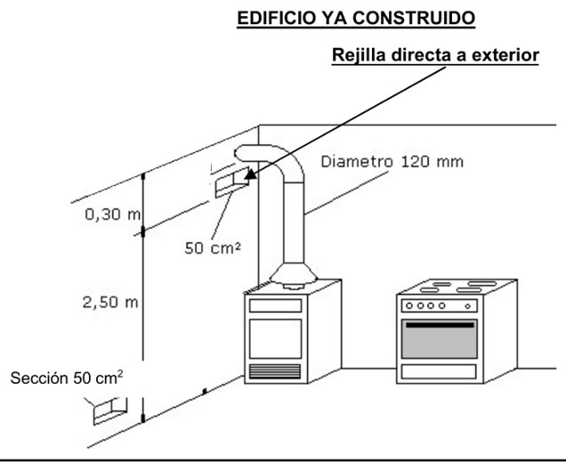 |
Orificio o rejilla de ventilación del local | ≥ 125 cm² | 50 cm², 120 cm² |
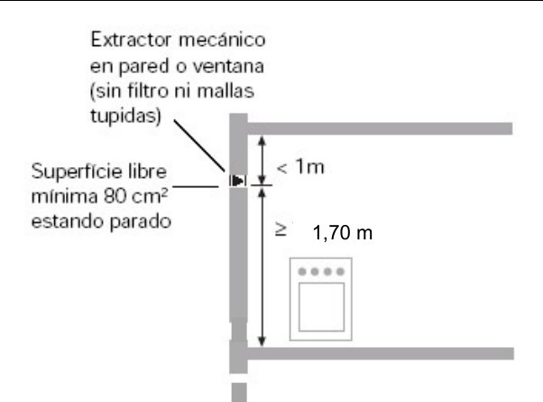 |
Ventilación superior o extractor mecánico (sin filtro) | Obra nueva: abertura superior a ≥ 1,80 m del suelo y ≤ 0,40 m del techo. Extractor en IP: ≥ 80 cm² libres parado (100 cm² si los tipo A suman más de 16 kW) y a ≥ 1,80 m del suelo O a menos de 0,40 m del techo | 1,70 m; creer que el extractor necesita 125 cm² |
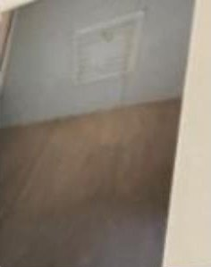 |
Rejilla de lamas móviles | No vale, no es ventilación permanente | — |
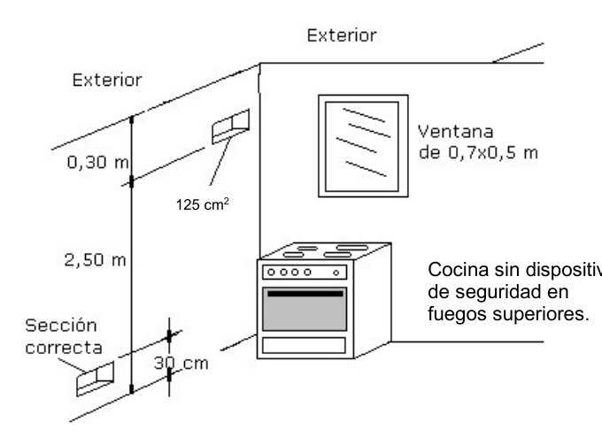 |
Cocina sin dispositivos de seguridad en los fuegos: ventilación rápida | ≥ 0,40 m² | Ventana de 0,7 × 0,5 = 0,35 m² |
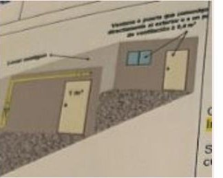 |
Ventilación rápida a través de un local contiguo | Puerta intermedia ≥ 1,2 m² | Puerta de 1 m² |
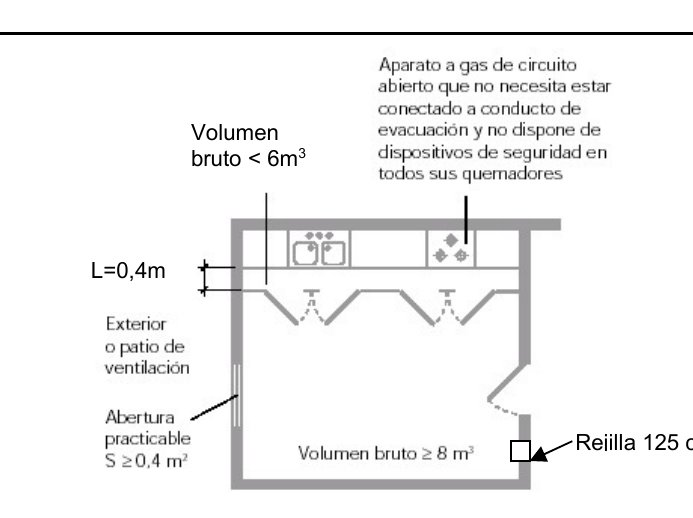 |
Local con aparato tipo A (no conectado) y armario-cocina | Volumen ≥ 6 m³; armario-cocina solo si la distancia más corta es ≤ 0,30 m | < 6 m³; L = 0,40 m |
 |
Aparatos de cocción de más de 16 kW | Volumen ≥ ΣQn − 8 (17 kW → 9 m³); si está entre el 75 y el 100 %, aumentar la ventilación un 50 % (secundaria) | Aumentar un 20 % |
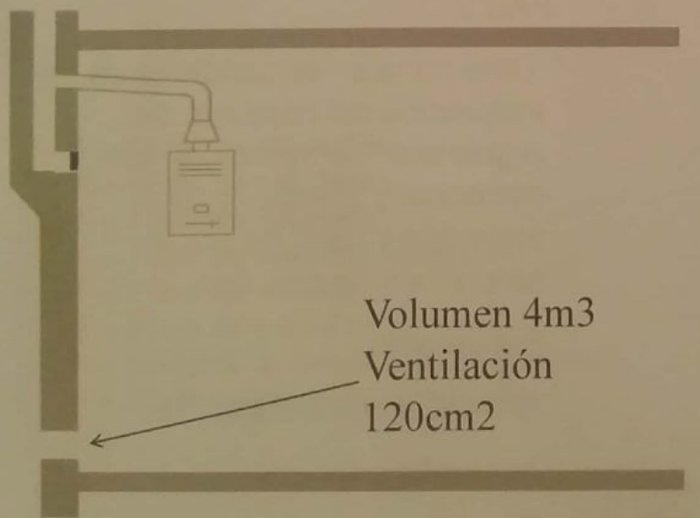 |
Aparatos conectados (tipo B) | Sin volumen mínimo; ventilación ≥ 125 cm² | 120 cm² |
 |
AU, aviso de falta de presión | Local sin ventilación de más de 8 m³: no es defecto | — |
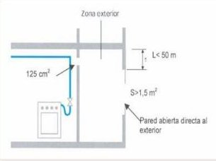 |
Zona exterior (galería abierta) | Abertura > 1,5 m² y parte superior a < 0,50 m del techo | S > 1,3 m²; L < 1 m |
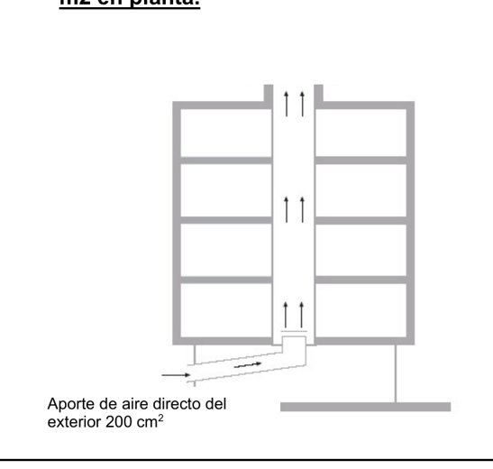 |
Patio de ventilación de menos de 3 m² (edificio existente) | Aporte de aire ≥ 300 cm²; si está techado, superficie libre ≥ 2 m² | 200 cm² |
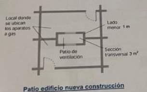 |
Patio de ventilación (edificio nuevo) | Lado mínimo 1 m y sección de 3 m²: correcto | — |
 |
Armario de centralización de contadores (más de 2) | Armario interior: superior e inferior ≥ 200 cm² cada una (armario exterior: 50 cm²; si el conducto mide más de 3 m, +50 %) | 100 cm² |
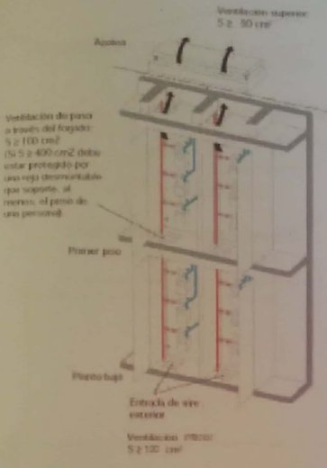 |
Conductos técnicos | Ventilación superior e inferior ≥ 150 cm² (confirmado en el Tema 3) y 100 cm² libres al atravesar cada forjado | 100 cm² |
 |
Armario de regulación no estanco en vestíbulo cerrado | Debe ventilar directamente al exterior | Rejillas al vestíbulo |
Contadores
| Dibujo | Situación | Valor correcto | Trampa del examen |
|---|---|---|---|
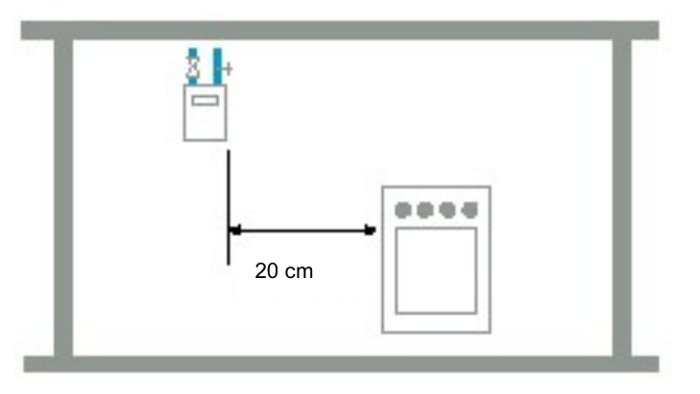 |
Contador sobre los fuegos de una cocina | ≥ 40 cm en proyección horizontal, salvo pantalla de protección (vale el lateral de un mueble que lo contenga) | 20 cm |
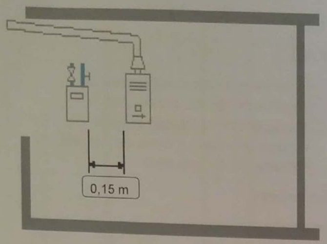 |
Contador junto a aparato de ACS o calefacción, o a mecanismos eléctricos | ≥ 20 cm | 15 cm |
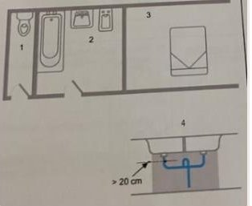 |
Contador junto al fregadero; locales prohibidos | Nunca bajo la proyección vertical del fregadero; nunca en dormitorio, baño, ducha o aseo (salvo espacio diáfano de más de 75 m³) | — |
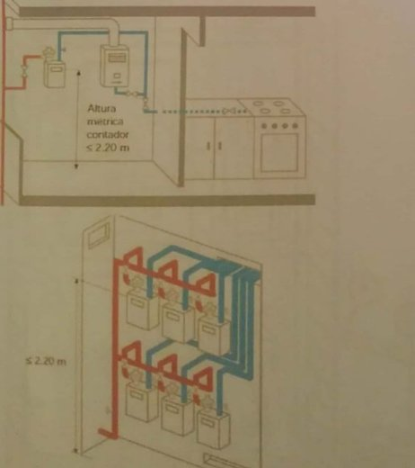 |
Altura máxima del totalizador | ≤ 1,70 m en vivienda · ≤ 2,00 m en centralización de contadores | 2,20 m |
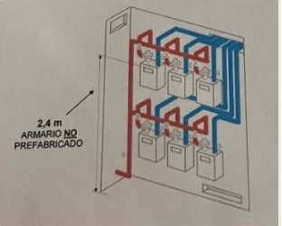 |
Armario de contadores no prefabricado | Totalizador a ≤ 2,00 m (hasta 2,40 m solo en módulos prefabricados con escalera) | 2,40 m |
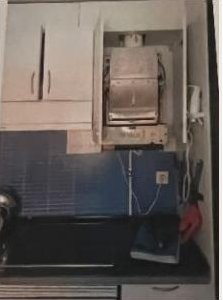 |
Proyección vertical de caldera tipo B sobre la cocina | ≥ 40 cm | Menos de 40 cm |
Salidas de humos (SPC)
| Dibujo | Situación | Valor correcto | Trampa del examen |
|---|---|---|---|
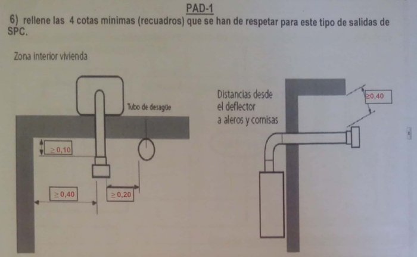 |
Las 4 cotas del dibujo de salida (PAD-1) | ≥ 10 cm al forjado · ≥ 40 cm a pared lateral · ≥ 20 cm a tubo de desagüe o resalte · ≥ 40 cm del deflector a aleros y cornisas | Poner 40 en la de 20 |
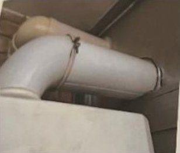 |
Aparato tipo B de tiro natural | Tramo vertical ≥ 20 cm a la salida del aparato y toma de muestras | Codo directo |
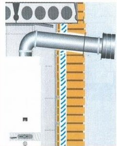 |
Trazado descendente | Anomalía principal en IP | — |
 |
Conducto sin deflector | Anomalía principal siempre (UNE 60670:2023: ya no se exceptúa la zona exterior) | — |
 |
Tubo corrugado en IP | Permitido; sin toma de muestras si tiene rejilla frontal | — |
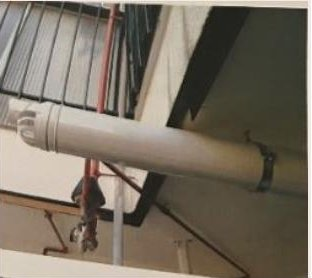 |
Salida a fachada | Tipo C por fachada: no sobresale más de 10 cm. Tipo B: extremo a ≥ 10 cm del muro que atraviesa | — |
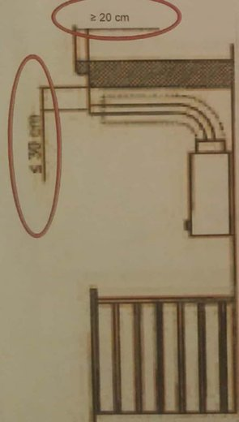 |
Bajo balcón o terraza (a < 30 cm del techo) | Extremo a ≤ 10 cm del borde exterior; no lo pasa | ≥ 20 cm |
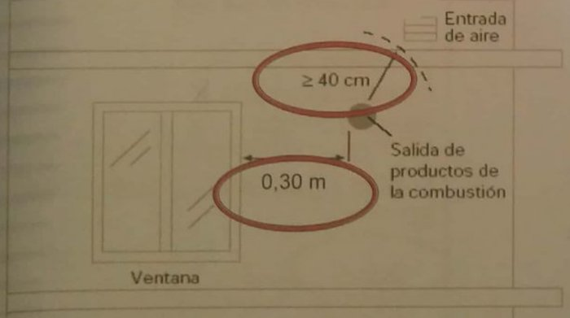 |
Distancia a ventanas y aberturas permanentes | ≥ 40 cm | 30 cm |
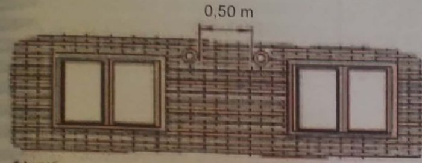 |
Entre dos salidas de calderas estancas (alta) | ≥ 60 cm (30 cm con deflectores divergentes) | 50 cm |
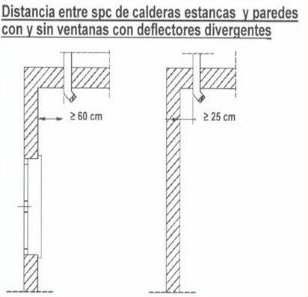 |
A pared lateral | ≥ 1 m con ventanas (a ≤ 3 m); ≥ 30 cm sin ventanas; la mitad con deflector divergente. Pared frontal: 3 m con ventana, 2 m sin ella (2,2 m / 1,5 m con deflector a 45º) | — |
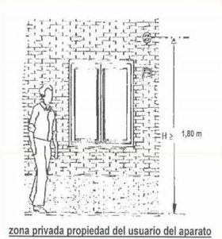 |
Caldera estanca en zona privada del usuario | Sin límite de altura en zona privada; fuera de ella ≥ 2,20 m sobre el suelo exterior | Pensar que necesita 1,80 m |
Tuberías, armarios y otros
| Dibujo | Situación | Valor correcto | Trampa del examen |
|---|---|---|---|
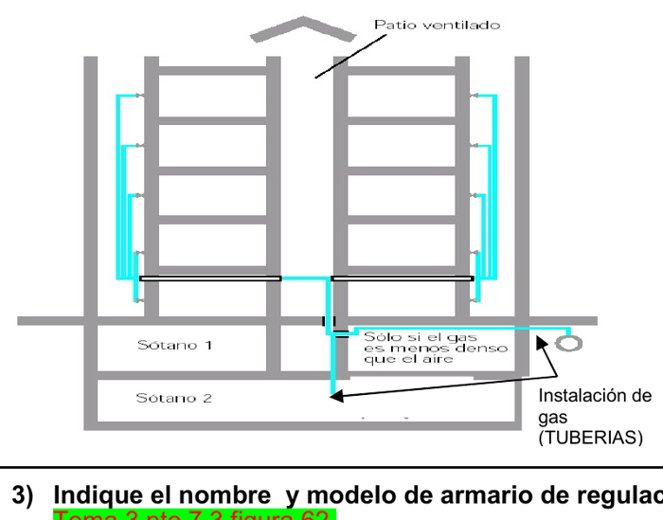 |
Tubería por segundo sótano | Prohibido (anomalía secundaria en IP) | — |
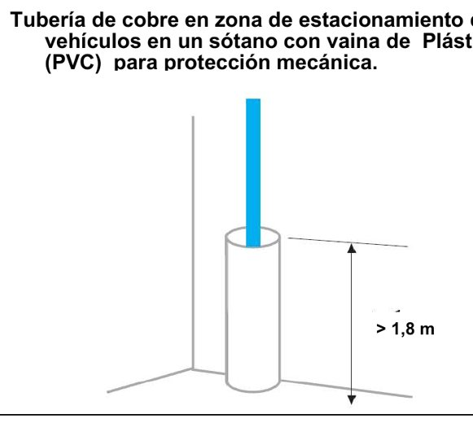 |
Vaina de protección en garaje | De acero o material de resistencia similar hasta ≥ 1,8 m | PVC |
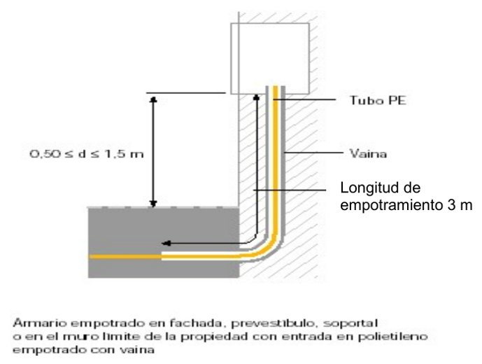 |
Empotramiento de tubería | ≤ 0,40 m; ≤ 2,5 m en la conexión a armario de regulación | 3 m |
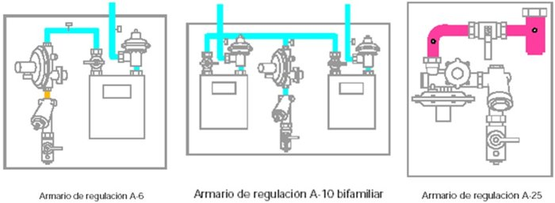 |
Armarios de regulación | A-6 unifamiliar · A-10 bifamiliar · A-25 (después A-50, A-100) | — |
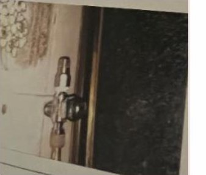 |
Limitador de caudal roscado | Con pasta de estanqueidad, no con teflón | Teflón |
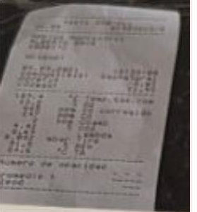 |
CO corregido en la prueba de combustión | 500–1000 ppm: secundaria (AS-6) · más de 1000 ppm: principal (AP-2) · CO ambiente: 15–50 ppm AS-1, más de 50 ppm AP-1 | — |
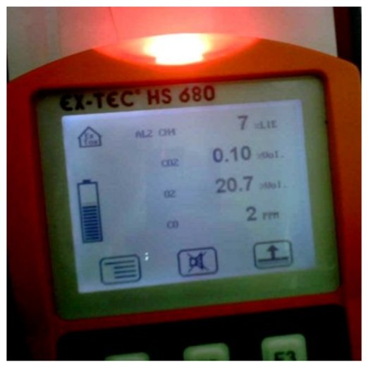 |
Explosímetro sin riesgo | LIE < 20 % y O₂ ≥ 19 % (gas natural: LIE 4,7 % · LSE 13,7 %) | — |
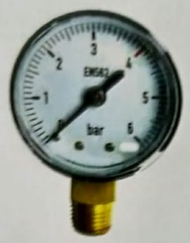 |
Manómetro de 0 a 6 bar | La presión de prueba debe quedar entre el 35 y el 75 % del fondo de escala (≈ 2–4,5 bar) | 0–6 bar |
PAD-1: casos tipo resueltos (altas)
En PAD-1 la respuesta es correcto o incorrecto, y si es incorrecto hay que nombrar la cota o el requisito que falla. Estos son los casos que se repiten entre los ejemplos oficiales y los exámenes de práctica.
1. Contador junto a la cocina (20 cm)

Incorrecto. Sobre los fuegos de cocción hacen falta 40 cm sin pantalla de protección.
2. Contador junto a un calentador (0,15 m)

Incorrecto. Mínimo 20 cm a un aparato de ACS.
3. ¿En cuál de los 4 locales se puede poner el contador?

Solo en el 4. El 1 es aseo, el 2 baño y el 3 dormitorio, que están prohibidos. El 4 vale porque no está debajo de la proyección vertical del fregadero.
4a. Contador dentro de la vivienda (≤ 2,20 m)
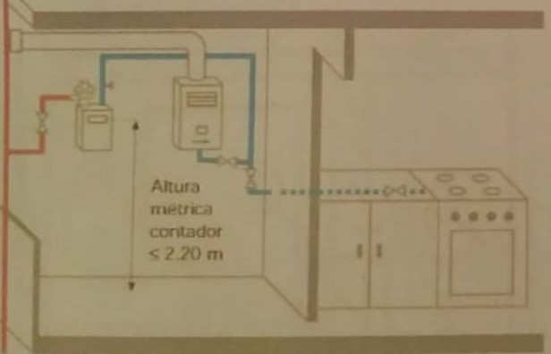
Incorrecto. En vivienda el totalizador debe quedar a 1,70 m como máximo, accesible sin abrir cerraduras ni usar escaleras (Tema 3 y UNE 60670-5:2023). El local debe tener además una ventilación permanente de 5 cm².
4b. Contadores centralizados en armario (≤ 2,20 m)
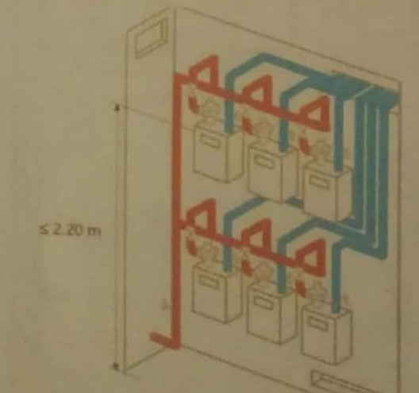
Incorrecto. En centralizaciones el totalizador debe quedar a 2,00 m como máximo. Solo los módulos prefabricados pueden llegar a 2,40 m, con escalera o útil similar.
5. Patio de 2,8 m² en edificio existente con aporte de 200 cm²

Incorrecto. Aporte de aire insuficiente: deben ser 300 cm². Si el patio está techado, la superficie libre mínima es de 2 m².
6. Cocina tipo A en local de menos de 6 m³ (L = 0,40 m)

Incorrecto. No es armario-cocina (máximo 0,30 m) y el volumen es menor de 6 m³.
7. Extractor a 1,70 m del suelo

Incorrecto. Los 80 cm² son correctos, pero la altura mínima es 1,80 m y debe quedar a menos de 0,40 m del techo.
8. Cocina sin seguridades con ventana de 0,7 × 0,5 m

Incorrecto. Ventilación rápida mínima 0,40 m²; la ventana tiene 0,35 m².
9. Calentador en local de 4 m³ con 120 cm² de ventilación

Incorrecto. Ventilación mínima 125 cm². Los aparatos conectados no tienen volumen mínimo.
10. Armario de regulación no estanco en vestíbulo cerrado
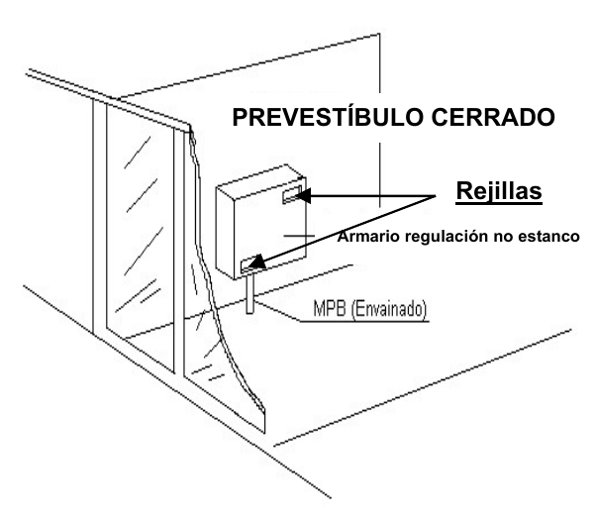
Incorrecto. Armario no estanco dentro del edificio y sin ventilación directa al exterior.
11. Salida de caldera estanca a 1,80 m en zona privada

Correcto. En la zona privada del usuario no hay límite de altura.
12. Dos salidas de calderas a 0,50 m

Incorrecto. La separación mínima entre dos salidas es de 60 cm (30 cm con deflectores divergentes).
13. Salida a 0,30 m de una ventana

Incorrecto. Mínimo 0,40 m a ventanas y aberturas permanentes.
14. Salida bajo balcón que sobresale 20 cm del borde

Incorrecto. A menos de 30 cm del techo, el extremo del tubo debe quedar a 10 cm como máximo del límite exterior.
15. Salidas a pared lateral con deflector divergente (≥ 60 cm y ≥ 25 cm)

Correcto. Con deflector divergente, el metro (con ventanas) y los 30 cm (sin ventanas) se reducen a la mitad.
16. Zona exterior con S > 1,3 m² y L < 1 m
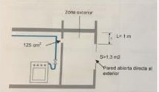
Incorrecto. Hace falta una abertura de más de 1,5 m² y la parte superior a menos de 0,50 m del techo.
17. Tubería que baja a un segundo sótano
Incorrecto. Una instalación de gas no puede pasar nunca por un segundo sótano.
18. Llave de cocina con limitador de caudal roscado con teflón
Incorrecto. Debe roscarse con pasta de estanqueidad.
19. Rejilla de lamas móviles

Incorrecto. No es una ventilación permanente.
20. Calentador tipo B con codo directo

Incorrecto. Falta el tramo vertical de 20 cm y la toma de muestras.
Dispositivos que hay que saber nombrar
VIS de mínima (1): corta el paso de gas cuando la presión baja del valor de tarado.
Regulador de abonado con VIS de mínima (2): reduce la presión y corta el gas por mínima presión.
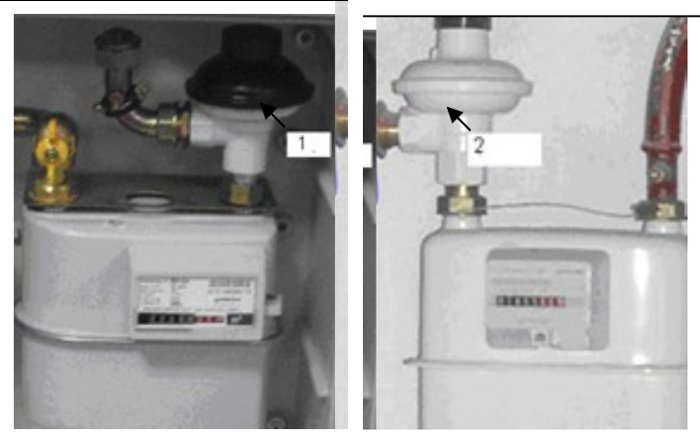
Conjunto de regulación A-25: llave de entrada de obturador esférico, toma de presión tipo Peterson (aguas arriba), filtro, VIS de máxima y/o mínima (basta con poner «seguridades»), regulador con VAS, toma de presión de débil calibre, llave de salida y recogedor de residuos. En la foto del examen los números cambian, así que apréndete los nombres, no el orden.
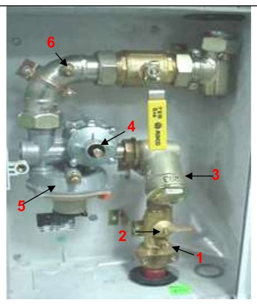
Armarios de regulación: A-6 unifamiliar, A-10 bifamiliar y A-25.
Llaves de la instalación receptora, por orden: 1 acometida · 2 edificio · 3 regulador · 4 montante colectivo · 5 abonado · 6 contador · 7 vivienda o local privado · 8 aparato.
PAD-2: casos tipo resueltos (inspección periódica)
En PAD-2 lo que puntúa es acertar la gravedad. Para decidir: si hay riesgo directo de intoxicación o de fuga (humos que vuelven al local, gas sin cerrar) es principal; si el problema es de ventilación, de conservación o de materiales, suele ser secundaria.
1. SPC de calentador tipo B con trazado descendente

Anomalía principal. Trazado descendente.
2. Caldera tipo B y extractor en la misma chimenea
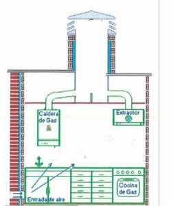
Anomalía principal. El extractor mecánico conectado a la chimenea de los aparatos tipo B puede hacer que los PDC vuelvan al local.
3. Conductos de evacuación que salen al exterior
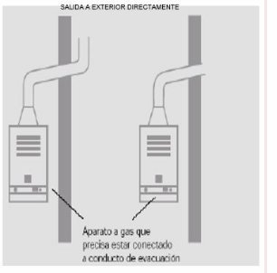
Anomalía principal. Falta deflector (IPa-5). Desde la UNE 60670:2023 es anomalía siempre, también en zona exterior.
4. Caldera en cuarto de baño
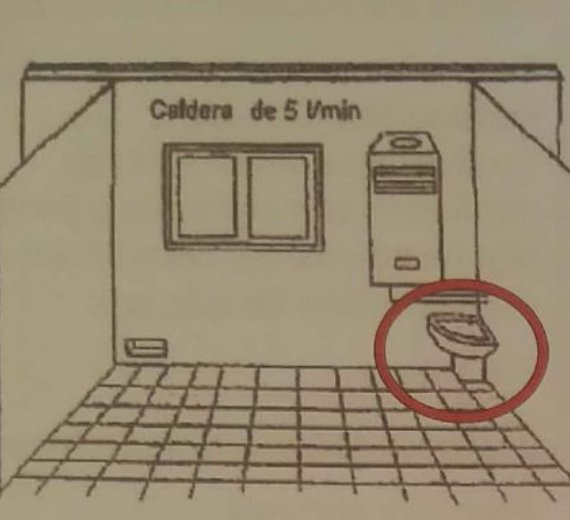
Anomalía principal. Aparato tipo B conectado en un baño. Si no aparece el inodoro, el defecto es «aparato sin conducto de evacuación».
5. Llave que daba gas a una cocina antigua
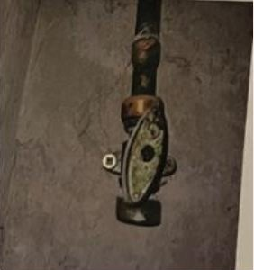
Anomalía principal. Llave de aparato sin conectar que no está cerrada, bloqueada, precintada y taponada.
6. Cocina de 17 kW en local de 7 m³
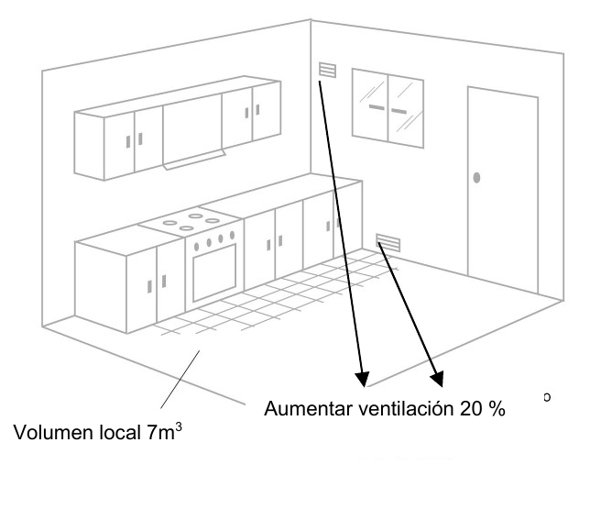
Anomalía secundaria. Volumen necesario 17 − 8 = 9 m³. Al estar entre el 75 y el 100 %, se aumenta la ventilación un 50 % (no un 20 %).
7. Aparato tipo A junto a galería cerrada
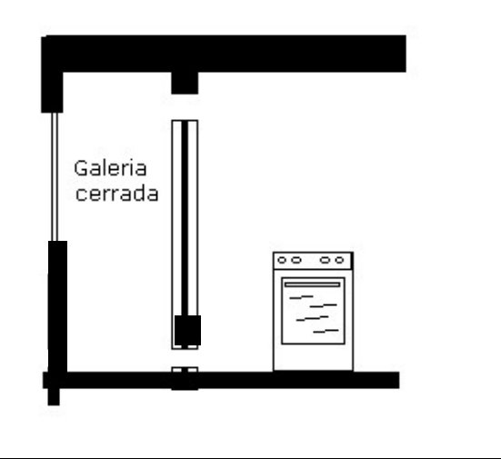
Anomalía secundaria. Falta orificio de ventilación y no hay campana ni extractor.
8. Rejilla de 50 cm² en edificio existente

Anomalía secundaria. Sección mínima 125 cm².
9. Extractor (80 cm²) a 1,70 m sin campana

Anomalía secundaria. La superficie (80 cm²) es correcta; falla la altura. En IP el extractor debe estar a ≥ 1,80 m del suelo o a menos de 0,40 m del techo, y no cumple ninguna de las dos (ISa-5).
10. Armario de contadores con 100 cm² por ventilación
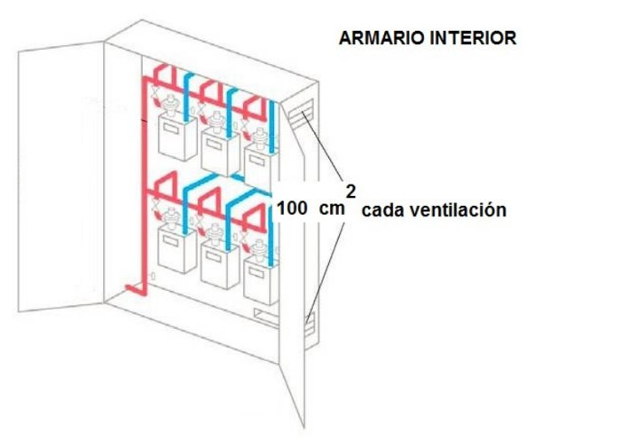
Anomalía secundaria. Con más de 2 contadores, cada ventilación necesita al menos 200 cm².
11. Empotramiento de 3 m hasta el armario de regulación
Anomalía secundaria. Máximo 2,5 m en la conexión a armarios de regulación (0,40 m en el resto).
12. Tubería de cobre en garaje con vaina de PVC
Anomalía secundaria. La vaina debe ser de acero o de un material de resistencia similar.
13. Tubería por segundo sótano
Anomalía secundaria. Prohibido pasar por un segundo sótano.
14. Ventilación de conductos técnicos

Anomalía secundaria. La ventilación inferior y la superior han de tener al menos 150 cm² (Tema 3).
15. Armario de contador sin puerta
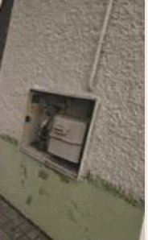
Anomalía secundaria. Falta puerta: «puerta o cerradura incorrecta» (CS-8 en instalación común; ISa-2 en individual). Una tubería con corrosión manifiesta es ISa-2, por estado de conservación.
16. Elastómero de cocina móvil
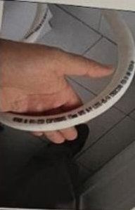
Anomalía secundaria. Goma caducada.
17. Llama del quemador
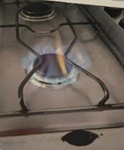
Anomalía secundaria. Funcionamiento incorrecto por suciedad o falta de aire primario.
18. Ticket de combustión con 660 ppm de CO corregido
Anomalía secundaria. CO corregido entre 500 y 1000 ppm (AS-6). Por encima de 1000 ppm sería principal (AP-2).
19. Aparato tipo C que sale a una galería cerrada
Sin defecto. En IP no se valora para aparatos tipo C; lo delataría el CO ambiente. En un alta sí tendría que salir al exterior.
20. Caldera con tubo corrugado
Sin defecto. El corrugado está permitido en IP y no hace falta toma de muestras al tener rejilla frontal. Si no hubiera toma accesible sin desmontar la carcasa, sería AS-4.
21. Zona exterior con S > 1,5 m² y L < 50 cm

Sin defecto. Cumple las condiciones de zona exterior.
22. Salida bajo balcón a ≤ 30 cm del techo y ≤ 10 cm del borde
Sin defecto. Cumple.
OD y AU: casos tipo resueltos
En OD y AU hay que escribir siempre dos cosas: la explicación y la actuación en la vivienda. La actuación casi siempre acaba en «prueba de estanqueidad y dar gas» o en «precintar».
OD (operaciones domiciliarias)
1. Cambio de contador con el contador a 2,45 m
Correcta. En un cambio de contador no se evalúan las distancias. Actuación: cambiar el contador, prueba de estanqueidad y dar gas.
2. Reapertura sin certificado: dos calderas estancas a 45 cm
Correcta. En reaperturas sin certificado no se evalúa esa distancia. Actuación: prueba de estanqueidad y dar gas.
3. Reapertura con certificado: caldera tipo B sin conducto
Incorrecta. Caldera sin conducto de evacuación; no cumple la UNE 60670. Actuación: precintar la caldera o la instalación.
AU-IR (urgencias en instalaciones receptoras)
1. Falta de presión: cocina tipo A en 9 m³ sin ventilación
Correcta. En este aviso la falta de ventilación no es un defecto a considerar (más de 8 m³). Actuación: comprobaciones, prueba de estanqueidad y dar gas.
2. Sin gas: caldera tipo B sin salida de humos
Incorrecta. Caldera sin conducto de evacuación de PDC. Actuación: cerrar el gas y precintar la caldera.
3. Fuga entre el buzón de acometida y el armario de regulación
Actuación: avisar al CCAU y dejarlo en seguridad (cerrar la llave de acometida si lo indican). Ese tramo ya es instalación receptora (acometida interior o instalación común): se aísla la parte afectada y se indica a los clientes cómo corregirlo; la reparación corresponde a la comunidad o titular (AU, Parte 2).
4. Manómetro de 0 a 6 bar
Entre 2 y 4 bar. La presión a medir debe quedar entre el 35 y el 75 % del fondo de escala (con 6 bar: de 2,1 a 4,5 bar).
Explosímetro: cómo razonarlo
Hay dos condiciones y deben cumplirse las dos para que no haya riesgo: LIE por debajo del 20 % y oxígeno al 19 % o más.
7 % del LIE, 20,7 % de O₂ y 2 ppm de CO
Sin riesgo. Se hace el aviso ventilando y trabajando con seguridad.
9 % de CH₄, 17,2 % de O₂ y 0 ppm de CO
Situación de riesgo. El oxígeno está por debajo del 19 %, y un 9 % de metano en volumen está dentro del rango explosivo (del 4,7 al 13,7 % para el gas natural). Las flechas del aparato indican que el metano se ha salido de escala. Actuación: no entrar; abrir tapas y puertas para ventilar sin acceder; con ≥ 50 % del LIE permanecer fuera, acordonar, ventilación forzada, cortar el gas desde el exterior y valorar evacuar; nada que haga chispa; avisar al CCAU. Con O₂ < 19 % solo se entra con equipo de respiración autónomo o semiautónomo (AU, Parte 4, apartado 3.4).
AU-Redes: tubo de PE con gas dañado junto a un cable con tensión
Riesgo inmediato. Avisar al CCAU y poner la zona en seguridad.
Los ejemplos oficiales remiten para el explosímetro al apartado 3.4 de la Parte 4 y al 5.4 de la Parte 1 de las Especificaciones Técnicas de AU.